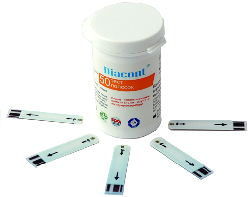

ПРОЕКТЫ ГУРЬЯНОВА ВАСИЛИЯ
IT-проекты
-

Вирусный код для юзверей.
Операция "Буря в лицее" -

Сверточная нейросеть для классификации дорожных знаков. При поддержке МФТИ
-
Сайт для психологической реабилитации и развлечений в эпоху чумы
-
Новостной сайт лицея — лучший в своем роде! Наш маленький и уютный Forbes, который запросто уделает всех конкурентов по школам
Технологические проекты
-
Стенд для переработки пластика и мастер-классы по экологии
-

Космическая станция: NASA или российские школьники-инженеры?
-

Прототип робота для нанесения дорожной разметки
-
Робот-подводник, или повесть о том, как мы боролись до конца и против всех
-

Хлебница или Laretz: многофункциональное изобретение для наших домохозяек
-

Астротрекер, или без чего астрономам жизнь не мила
-

ANTEZI: быстрый тест на содержание антиоксидантов в продуктах питания
-
Самый первый проект, которому три года - телескоп своими руками